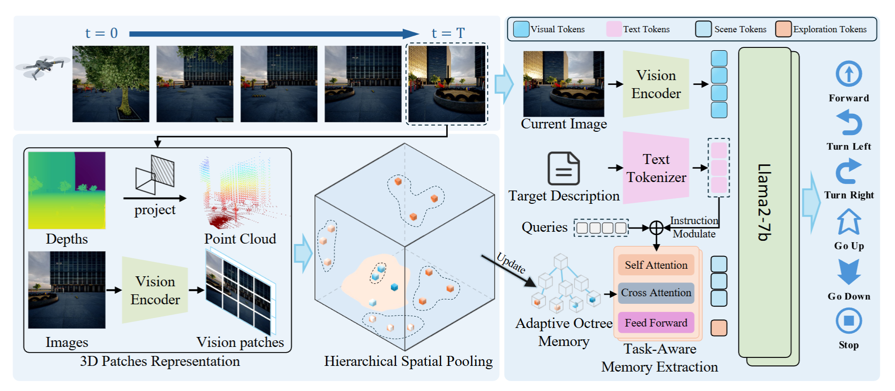
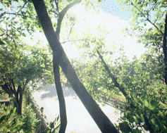
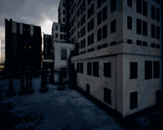
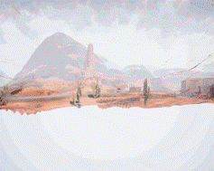

Abstract
Aerial object-goal navigation requires an unmanned aerial vehicle to navigate to target objects in large-scale outdoor environments using only visual observations and high-level object descriptions. Existing approaches often rely on local observations or short-term history, which limits scene understanding and spatial exploration in complex aerial scenarios. We propose OctMem-Agent, an octree memory-augmented framework for Aerial ObjectNav. OctMem-Agent incrementally aggregates RGB-D observations into an Adaptive Octree Memory, capturing explored regions and unexplored frontiers across large-scale environments. It further uses an Instruction-Guided Memory Query module to extract task-relevant scene and exploration tokens through instruction-modulated queries. Integrated with visual observations and language instructions, OctMem-Agent improves scene understanding and target localization, achieving a 7.5% success-rate improvement over existing methods on the UAV-ON benchmark.
Method

OctMem-Agent addresses open-world aerial object-goal navigation, where a UAV must locate a target from visual observations and a high-level object description without step-by-step instructions. The framework first projects RGB-D observations into 3D patches, then performs distance-adaptive hierarchical aggregation and stores the resulting features in an Adaptive Octree Memory for scalable long-term scene representation.
On top of this memory, an Instruction-Guided Memory Query module uses instruction-modulated scene queries and exploration queries to retrieve task-relevant nearby regions and distant frontiers. These memory tokens are fused with the current observation and language instruction, enabling the policy to balance target localization with spatial exploration.
Results
Table 1: Total SR on UAV-ON
OctMem-Agent achieves the highest total SR, improving over OpenFly by 7.5%.
Table 2: Seen and Unseen SR
The model keeps the best SR in both seen and unseen environments.
Table 3: Component Ablation
Adaptive Octree Memory and Instruction-Guided Memory Query both improve navigation performance.
Example Navigation



BibTeX
@InProceedings{Zhou_2026_CVPR,
author = {Zhou, Jiacong and Miao, Jiaxu and Lin, Yourun and Wang, Xianyun and Xiao, Jun and Yu, Jun},
title = {Memory-Augmented Scene Understanding and Exploration for Open-World Aerial Object-Goal Navigation},
booktitle = {Proceedings of the IEEE/CVF Conference on Computer Vision and Pattern Recognition (CVPR)},
month = {June},
year = {2026},
pages = {21616-21626}
}